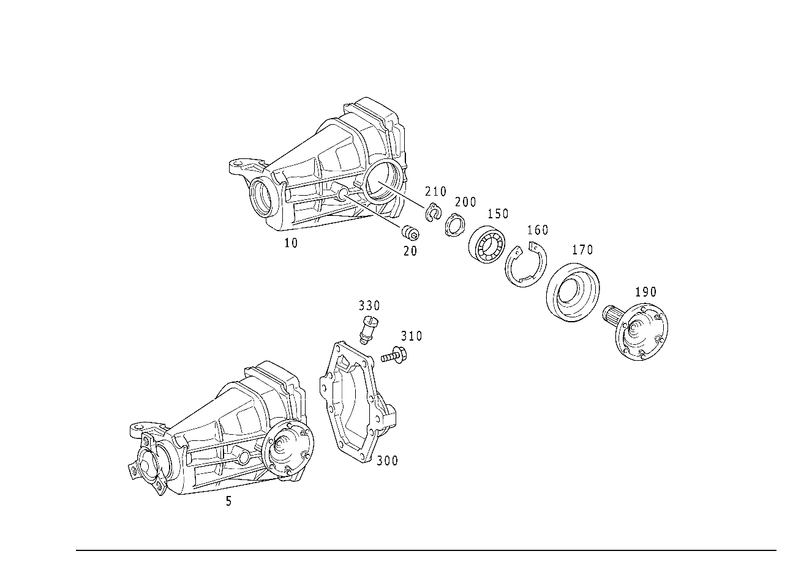

| № | Артикул | Название | Кол. | Примечание | Ограничение |
|---|---|---|---|---|---|
| 5 | A 202 350 97 14 | Картер моста | 1 | ЦЕНТР. ЭЛЕМЕНТ ЗАДН. МОСТА С ФЛАНЦЕМ; 1:3.07 [697] ДЕТАЛЬ ПОСТАВЛЯЕТСЯ ТОЛЬКО/ИЛИ ТАКЖЕ КАК ЗАП.ЧАСТЬ | M112+M32+M001 |
| 5 | A 202 350 97 14 | Картер моста | 1 | ЦЕНТР. ЭЛЕМЕНТ ЗАДН. МОСТА С ФЛАНЦЕМ; 1:3.07 [697] ДЕТАЛЬ ПОСТАВЛЯЕТСЯ ТОЛЬКО/ИЛИ ТАКЖЕ КАК ЗАП.ЧАСТЬ [001563] ВНИМАНИЕ С ИД.№ F 245160 ДО F 266536 СМЕШ. УСТАНОВКА ВОЗМОЖНА . НА СНЯТ. ПОЛУОСЬ ОБРАТИТЬ ВНИМ., НЕ ДЕЙСТВИТ. ПРИ ВСТАВЛЕННОЙ ПОЛУОСИ | M112+M32+M001 |
| 5 | A 210 350 73 62 | Картер моста | 1 | ЦЕНТР. ЭЛЕМЕНТ ЗАДН. МОСТА БЕЗ ФЛАНЦА; 1:3.07 [697] ДЕТАЛЬ ПОСТАВЛЯЕТСЯ ТОЛЬКО/ИЛИ ТАКЖЕ КАК ЗАП.ЧАСТЬ [001564] ВНИМАНИЕ - С ИДЕНТ. №: F 245160 ПО ИДЕНТ. №: F 266536 ВОЗМОЖНА СМЕШАННАЯ УСТАНОВКАОБРАТИТЬ ВНИМАНИЕ НА СНЯТУЮ ПОЛУОСЬ, НЕДЕЙСТ ВИТЕЛЬНО ДЛЯ ПОЛУОСИ С РЕЗЬБОВЫМ СОЕДИНЕНИЕМ | M112+M32+M001 |
| 5 | A 210 350 73 62 | Картер моста | 1 | ЦЕНТР. ЭЛЕМЕНТ ЗАДН. МОСТА БЕЗ ФЛАНЦА; 1:3.07 [697] ДЕТАЛЬ ПОСТАВЛЯЕТСЯ ТОЛЬКО/ИЛИ ТАКЖЕ КАК ЗАП.ЧАСТЬ | M112+M32+M001 |
| 10 | A 210 351 08 05 | - Корпус (GEHAEUSE) | 1 | КАРТЕР ЗАДНЕГО МОСТА | M112+M32 |
| 20 | A 352 997 00 32 | - Резьбовая пробка (VERSCHLUSSSCHRAUBE) | 2 | КАРТЕР ЗАДНЕГО МОСТА | |
| 30 | A 129 350 20 23 | - Дифференциал | 1 | БЕЗ КОМПЛЕКТА ШЕСТЕРЕН [402] БОЛЬШЕ НЕ ПОСТАВЛЯЕТСЯ | M112+M32 |
| 40 | A 115 353 12 62 | - Упорная шайба (ANLAUFSCHEIBE) | NB | 1.25 MM | (M111+(M20/M23)+M001/M112+M32) |
| 40 | A 115 353 11 62 | - Упорная шайба (ANLAUFSCHEIBE) | NB | 1.30 MM | (M111+(M20/M23)+M001/M112+M32) |
| 40 | A 115 353 16 62 | - Упорная шайба (ANLAUFSCHEIBE) | NB | 1.35 MM | (M111+(M20/M23)+M001/M112+M32) |
| 40 | A 115 353 10 62 | - Упорная шайба (ANLAUFSCHEIBE) | NB | 1.40 MM | (M111+(M20/M23)+M001/M112+M32) |
| 40 | A 115 353 17 62 | - Упорная шайба (ANLAUFSCHEIBE) | NB | 1.45 MM | (M111+(M20/M23)+M001/M112+M32) |
| 40 | A 115 353 19 62 | - Упорная шайба (ANLAUFSCHEIBE) | NB | 1.65 MM | (M111+(M20/M23)+M001/M112+M32) |
| 40 | A 115 353 09 62 | - Упорная шайба (ANLAUFSCHEIBE) | NB | 1.50 MM | (M111+(M20/M23)+M001/M112+M32) |
| 40 | A 115 353 08 62 | - Упорная шайба (ANLAUFSCHEIBE) | NB | 1.60 MM | (M111+(M20/M23)+M001/M112+M32) |
| 40 | A 115 353 18 62 | - Упорная шайба (ANLAUFSCHEIBE) | NB | 1.55 MM | (M111+(M20/M23)+M001/M112+M32) |
| 50 | A 210 353 05 15 | - Шестерня полуоси (ACHSWELLENRAD) | 2 | ОТБОР МОЩНОСТИ ЗАДНЕГО МОСТА | M112+M32 |
| 60 | A 210 353 01 14 | - Сателлит дифференциала (AUSGLEICHSKEGELRAD) | 2 | ОТБОР МОЩНОСТИ ЗАДНЕГО МОСТА | M112+M32 |
| 70 | A 210 353 02 24 | - Сферическая шайба (KUGELSCHEIBE) | 2 | ОТБОР МОЩНОСТИ ЗАДНЕГО МОСТА | M112+M32 |
| 80 | A 210 353 02 21 | - Палец (BOLZEN) | 1 | ОТБОР МОЩНОСТИ ЗАДНЕГО МОСТА | M112+M32 |
| 90 | N 001481 006017 | - Распорный штифт (SPANNSTIFT) | 1 | ОТБОР МОЩНОСТИ ЗАДНЕГО МОСТА | M112+M32 |
| 120 | A 210 350 43 39 | - РЯД ШЕСТЕРЕН | 1 | 1:3.07 | M112+M32+M001 |
| 130 | A 003 990 54 12 | - болт (SCHRAUBE) | 10 | ТАРЕЛЬЧ. ШЕСТЕРНЯ НА КОРПУСЕ ДИФФЕРЕНЦИАЛА; M10X1 | (M111+(M20/M23)+M001/M112+M32) |
| 150 | A 210 980 00 02 | - Подшипник (LAGER) | 2 | ОПОРА ТАРЕЛЬЧ. ШЕСТЕРНИ | M112+M32 |
| 160 | A 210 994 01 41 | - предохранитель (SICHERUNG) | 2 | ПО НЕОБХОДИМОСТИ; 3.60 MM | M112+M32 |
| 160 | A 210 994 02 41 | - предохранитель (SICHERUNG) | 2 | ПО НЕОБХОДИМОСТИ; 3.70 MM [402] БОЛЬШЕ НЕ ПОСТАВЛЯЕТСЯ | M112+M32 |
| 160 | A 210 994 03 41 | - предохранитель (SICHERUNG) | 2 | ПО НЕОБХОДИМОСТИ; 3.80 MM [402] БОЛЬШЕ НЕ ПОСТАВЛЯЕТСЯ | M112+M32 |
| 160 | A 210 994 04 41 | - предохранитель (SICHERUNG) | 2 | ПО НЕОБХОДИМОСТИ; 3.85 MM [402] БОЛЬШЕ НЕ ПОСТАВЛЯЕТСЯ | M112+M32 |
| 160 | A 210 994 05 41 | - предохранитель (SICHERUNG) | 2 | ПО НЕОБХОДИМОСТИ; 3.90 MM | M112+M32 |
| 160 | A 210 994 06 41 | - предохранитель (SICHERUNG) | 2 | ПО НЕОБХОДИМОСТИ; 3.95 MM [402] БОЛЬШЕ НЕ ПОСТАВЛЯЕТСЯ | M112+M32 |
| 160 | A 210 994 07 41 | - предохранитель (SICHERUNG) | 2 | ПО НЕОБХОДИМОСТИ; 4.00 MM | M112+M32 |
| 160 | A 210 994 08 41 | - предохранитель | 2 | ПО НЕОБХОДИМОСТИ; 4.05 MM [402] БОЛЬШЕ НЕ ПОСТАВЛЯЕТСЯ | M112+M32 |
| 160 | A 210 994 09 41 | - предохранитель (SICHERUNG) | 2 | ПО НЕОБХОДИМОСТИ; 4.10 MM | M112+M32 |
| 160 | A 210 994 10 41 | - предохранитель (SICHERUNG) | 2 | ПО НЕОБХОДИМОСТИ; 4.15 MM [402] БОЛЬШЕ НЕ ПОСТАВЛЯЕТСЯ | M112+M32 |
| 160 | A 210 994 11 41 | - предохранитель (SICHERUNG) | 2 | ПО НЕОБХОДИМОСТИ; 4.20 MM | M112+M32 |
| 160 | A 210 994 12 41 | - предохранитель (SICHERUNG) | 2 | ПО НЕОБХОДИМОСТИ; 4.30 MM [402] БОЛЬШЕ НЕ ПОСТАВЛЯЕТСЯ | M112+M32 |
| 160 | A 210 994 13 41 | - предохранитель (SICHERUNG) | 2 | ПО НЕОБХОДИМОСТИ; 4.40 MM [402] БОЛЬШЕ НЕ ПОСТАВЛЯЕТСЯ | M112+M32 |
| 160 | A 210 994 14 41 | - предохранитель (SICHERUNG) | 2 | ПО НЕОБХОДИМОСТИ; 4.45 MM [402] БОЛЬШЕ НЕ ПОСТАВЛЯЕТСЯ | M112+M32 |
| 160 | A 210 994 15 41 | - предохранитель (SICHERUNG) | 2 | ПО НЕОБХОДИМОСТИ; 4.50 MM [402] БОЛЬШЕ НЕ ПОСТАВЛЯЕТСЯ | M112+M32 |
| 170 | A 024 997 46 47 | - УПЛОТНИТ. КОЛЬЦО | 2 | ФЛАНЕЦ ВНУТР. | M112+M32 |
| 170 | A 024 997 97 47 | - УПЛОТНИТ. КОЛЬЦО | 2 | ФЛАНЕЦ ВНУТР. | M112+M32 |
| 170 | A 025 997 26 47 | - Уплотнительное кольцо (DICHTRING) | 2 | ФЛАНЕЦ ВНУТР. | M112+M32 |
| 190 | A 220 350 25 45 | - Фланец (FLANSCH) | 2 | ВНУТР. [001280] ОТДЕЛЬН. ДЕТАЛИ ДЕЙСТВИТЕЛЬНЫ ТОЛЬКО ДЛЯ ПРИКРУЧ. ПОЛУОСЕЙ | M112+M32 |
| 200 | A 123 357 15 52 | - Диск (SCHEIBE) | NB | 0.70 MM | |
| 200 | A 123 357 14 52 | - Диск (SCHEIBE) | NB | 0.80 MM | |
| 200 | A 123 357 13 52 | - Дистанционная шайба (ABSTANDSSCHEIBE) | NB | 0.85 MM | |
| 200 | A 123 357 12 52 | - Диск (SCHEIBE) | NB | 0.90 MM | |
| 200 | A 123 357 11 52 | - Дистанционная шайба (ABSTANDSSCHEIBE) | NB | 0.95 MM | |
| 200 | A 123 357 10 52 | - Диск (SCHEIBE) | NB | 1.00 MM | |
| 200 | A 123 357 09 52 | - Дистанционная шайба (ABSTANDSSCHEIBE) | NB | 1.05 MM | |
| 200 | A 123 357 08 52 | - Диск (SCHEIBE) | NB | 1.10 MM | |
| 200 | A 123 357 07 52 | - Дистанционная шайба (ABSTANDSSCHEIBE) | NB | 1.15 MM | |
| 200 | A 123 357 06 52 | - Диск (SCHEIBE) | NB | 1.20 MM | |
| 200 | A 123 357 05 52 | - Дистанционная шайба (ABSTANDSSCHEIBE) | NB | 1.25 MM | |
| 200 | A 123 357 04 52 | - РАСПОРНАЯ ШАЙБА | NB | 1.30 MM [402] БОЛЬШЕ НЕ ПОСТАВЛЯЕТСЯ | |
| 200 | A 123 357 03 52 | - Дистанционная шайба (ABSTANDSSCHEIBE) | NB | 1.35 MM [402] БОЛЬШЕ НЕ ПОСТАВЛЯЕТСЯ | |
| 200 | A 123 357 02 52 | - РАСПОРНАЯ ШАЙБА | NB | 1.40 MM [402] БОЛЬШЕ НЕ ПОСТАВЛЯЕТСЯ | |
| 200 | A 123 357 01 52 | - Диск (SCHEIBE) | NB | 1.50 MM [402] БОЛЬШЕ НЕ ПОСТАВЛЯЕТСЯ | |
| 210 | A 140 994 71 40 | - Пруж. стопорное кольцо (SPRENGRING) | 2 | ПО НЕОБХОДИМОСТИ 2.60 MM; 2.60 MM [402] БОЛЬШЕ НЕ ПОСТАВЛЯЕТСЯ | |
| 210 | A 140 994 72 40 | - Пруж. стопорное кольцо (SPRENGRING) | 2 | ПО НЕОБХОДИМОСТИ 2.65 MM; 2.65 MM [402] БОЛЬШЕ НЕ ПОСТАВЛЯЕТСЯ | |
| 210 | A 140 994 73 40 | - Пруж. стопорное кольцо (SPRENGRING) | 2 | ПО НЕОБХОДИМОСТИ 2.70 MM; 2.70 MM [402] БОЛЬШЕ НЕ ПОСТАВЛЯЕТСЯ | |
| 210 | A 140 994 23 40 | - Пруж. стопорное кольцо (SPRENGRING) | 2 | ПО НЕОБХОДИМОСТИ; 1.40 MM | |
| 210 | A 140 994 24 40 | - Пруж. стопорное кольцо (SPRENGRING) | 2 | ПО НЕОБХОДИМОСТИ; 1.45 MM [402] БОЛЬШЕ НЕ ПОСТАВЛЯЕТСЯ | |
| 210 | A 140 994 25 40 | - Пруж. стопорное кольцо (SPRENGRING) | 2 | ПО НЕОБХОДИМОСТИ; 1.50 MM [402] БОЛЬШЕ НЕ ПОСТАВЛЯЕТСЯ | |
| 210 | A 140 994 26 40 | - Пруж. стопорное кольцо (SPRENGRING) | 2 | ПО НЕОБХОДИМОСТИ; 1.55 MM | |
| 210 | A 140 994 27 40 | - Пруж. стопорное кольцо (SPRENGRING) | 2 | ПО НЕОБХОДИМОСТИ; 1.60 MM | |
| 210 | A 140 994 28 40 | - Пруж. стопорное кольцо (SPRENGRING) | 2 | ПО НЕОБХОДИМОСТИ; 1.65 MM | |
| 210 | A 140 994 29 40 | - Пруж. стопорное кольцо (SPRENGRING) | 2 | ПО НЕОБХОДИМОСТИ; 1.70 MM | |
| 210 | A 140 994 30 40 | - Пруж. стопорное кольцо (SPRENGRING) | 2 | ПО НЕОБХОДИМОСТИ; 1.75 MM | |
| 210 | A 140 994 31 40 | - Пруж. стопорное кольцо (SPRENGRING) | 2 | ПО НЕОБХОДИМОСТИ; 1.80 MM | |
| 210 | A 140 994 32 40 | - Пруж. стопорное кольцо (SPRENGRING) | 2 | ПО НЕОБХОДИМОСТИ; 1.85 MM | |
| 210 | A 140 994 33 40 | - Пруж. стопорное кольцо (SPRENGRING) | 2 | ПО НЕОБХОДИМОСТИ; 1.90 MM | |
| 210 | A 140 994 34 40 | - Пруж. стопорное кольцо (SPRENGRING) | 2 | ПО НЕОБХОДИМОСТИ; 1.95 MM [402] БОЛЬШЕ НЕ ПОСТАВЛЯЕТСЯ | |
| 210 | A 140 994 35 40 | - Пруж. стопорное кольцо (SPRENGRING) | 2 | ПО НЕОБХОДИМОСТИ; 2.00 MM | |
| 210 | A 140 994 36 40 | - Пруж. стопорное кольцо (SPRENGRING) | 2 | ПО НЕОБХОДИМОСТИ; 2.05 MM [402] БОЛЬШЕ НЕ ПОСТАВЛЯЕТСЯ | |
| 210 | A 140 994 37 40 | - Пруж. стопорное кольцо (SPRENGRING) | 2 | ПО НЕОБХОДИМОСТИ; 2.10 MM | |
| 210 | A 140 994 38 40 | - Пруж. стопорное кольцо | 2 | ПО НЕОБХОДИМОСТИ; 2.15 MM [402] БОЛЬШЕ НЕ ПОСТАВЛЯЕТСЯ | |
| 210 | A 140 994 39 40 | - СТОПОРН. КОЛЬЦО | 2 | ПО НЕОБХОДИМОСТИ; 2.20 MM [402] БОЛЬШЕ НЕ ПОСТАВЛЯЕТСЯ | |
| 210 | A 140 994 40 40 | - Пруж. стопорное кольцо (SPRENGRING) | 2 | ПО НЕОБХОДИМОСТИ; 2.25 MM [402] БОЛЬШЕ НЕ ПОСТАВЛЯЕТСЯ | |
| 210 | A 140 994 41 40 | - СТОПОРН. КОЛЬЦО | 2 | ПО НЕОБХОДИМОСТИ; 2.30 MM [402] БОЛЬШЕ НЕ ПОСТАВЛЯЕТСЯ | |
| 210 | A 140 994 42 40 | - СТОПОРН. КОЛЬЦО | 2 | ПО НЕОБХОДИМОСТИ; 2.35 MM [402] БОЛЬШЕ НЕ ПОСТАВЛЯЕТСЯ | |
| 210 | A 140 994 43 40 | - Пруж. стопорное кольцо | 2 | ПО НЕОБХОДИМОСТИ; 2.40 MM [402] БОЛЬШЕ НЕ ПОСТАВЛЯЕТСЯ | |
| 210 | A 140 994 44 40 | - Пруж. стопорное кольцо (SPRENGRING) | 2 | ПО НЕОБХОДИМОСТИ; 1.30 MM | |
| 210 | A 140 994 45 40 | - Пруж. стопорное кольцо | 2 | ПО НЕОБХОДИМОСТИ; 1.35 MM [402] БОЛЬШЕ НЕ ПОСТАВЛЯЕТСЯ | |
| 210 | A 140 994 68 40 | - Пруж. стопорное кольцо (SPRENGRING) | 2 | ПО НЕОБХОДИМОСТИ; 2.45 MM | |
| 210 | A 140 994 69 40 | - Пруж. стопорное кольцо (SPRENGRING) | 2 | ПО НЕОБХОДИМОСТИ; 2.50 MM [402] БОЛЬШЕ НЕ ПОСТАВЛЯЕТСЯ | |
| 210 | A 140 994 70 40 | - Пруж. стопорное кольцо (SPRENGRING) | 2 | ПО НЕОБХОДИМОСТИ; 2.55 MM [402] БОЛЬШЕ НЕ ПОСТАВЛЯЕТСЯ | |
| 220 | A 126 353 01 52 | - Дистанционная шайба (ABSTANDSSCHEIBE) | 1 | ПО НЕОБХОДИМОСТИ 1.50 MM | M112+M32 |
| 220 | A 126 353 02 52 | - Дистанционная шайба (ABSTANDSSCHEIBE) | 1 | ПО НЕОБХОДИМОСТИ 1.55 MM | M112+M32 |
| 220 | A 126 353 03 52 | - Дистанционная шайба (ABSTANDSSCHEIBE) | 1 | ПО НЕОБХОДИМОСТИ 1.60 MM [402] БОЛЬШЕ НЕ ПОСТАВЛЯЕТСЯ | M112+M32 |
| 220 | A 126 353 04 52 | - Дистанционная шайба (ABSTANDSSCHEIBE) | 1 | ПО НЕОБХОДИМОСТИ 1.65 MM | M112+M32 |
| 220 | A 126 353 05 52 | - Дистанционная шайба (ABSTANDSSCHEIBE) | 1 | ПО НЕОБХОДИМОСТИ 1.70 MM | M112+M32 |
| 220 | A 126 353 06 52 | - Дистанционная шайба (ABSTANDSSCHEIBE) | 1 | ПО НЕОБХОДИМОСТИ 1.75 MM | M112+M32 |
| 220 | A 126 353 07 52 | - Дистанционная шайба (ABSTANDSSCHEIBE) | 1 | ПО НЕОБХОДИМОСТИ 1.80 MM | M112+M32 |
| 220 | A 126 353 08 52 | - Дистанционная шайба (ABSTANDSSCHEIBE) | 1 | ПО НЕОБХОДИМОСТИ 1.85 MM | M112+M32 |
| 220 | A 126 353 09 52 | - Дистанционная шайба (ABSTANDSSCHEIBE) | 1 | ПО НЕОБХОДИМОСТИ 1.90 MM | M112+M32 |
| 220 | A 126 353 10 52 | - Дистанционная шайба (ABSTANDSSCHEIBE) | 1 | ПО НЕОБХОДИМОСТИ 1.95 MM | M112+M32 |
| 220 | A 126 353 11 52 | - Дистанционная шайба (ABSTANDSSCHEIBE) | 1 | ПО НЕОБХОДИМОСТИ 2.00 MM [402] БОЛЬШЕ НЕ ПОСТАВЛЯЕТСЯ | M112+M32 |
| 220 | A 126 353 12 52 | - Дистанционная шайба (ABSTANDSSCHEIBE) | 1 | ПО НЕОБХОДИМОСТИ 2.05 MM | M112+M32 |
| 220 | A 126 353 13 52 | - Дистанционная шайба (ABSTANDSSCHEIBE) | 1 | ПО НЕОБХОДИМОСТИ 2.10 MM [402] БОЛЬШЕ НЕ ПОСТАВЛЯЕТСЯ | M112+M32 |
| 220 | A 126 353 14 52 | - Дистанционная шайба (ABSTANDSSCHEIBE) | 1 | ПО НЕОБХОДИМОСТИ 2.15 MM | M112+M32 |
| 220 | A 126 353 15 52 | - Дистанционная шайба (ABSTANDSSCHEIBE) | 1 | ПО НЕОБХОДИМОСТИ 2.20 MM | M112+M32 |
| 220 | A 126 353 16 52 | - Дистанционная шайба (ABSTANDSSCHEIBE) | 1 | ПО НЕОБХОДИМОСТИ 2.25 MM [402] БОЛЬШЕ НЕ ПОСТАВЛЯЕТСЯ | M112+M32 |
| 220 | A 126 353 17 52 | - Дистанционная шайба (ABSTANDSSCHEIBE) | 1 | ПО НЕОБХОДИМОСТИ 2.30 MM [402] БОЛЬШЕ НЕ ПОСТАВЛЯЕТСЯ | M112+M32 |
| 220 | A 126 353 18 52 | - Дистанционная шайба (ABSTANDSSCHEIBE) | 1 | ПО НЕОБХОДИМОСТИ 2.35 MM | M112+M32 |
| 220 | A 126 353 19 52 | - Дистанционная шайба (ABSTANDSSCHEIBE) | 1 | ПО НЕОБХОДИМОСТИ 2.40 MM | M112+M32 |
| 230 | A 000 980 09 02 | - Конический подшипник (KEGELLAGER) | 1 | ПРИВОДН. КОНИЧ. ШЕСТЕРНЯ | M112+M32 |
| 240 | A 126 353 00 42 | - Проставочная втулка (ABSTANDSBUCHSE) | 1 | [402] БОЛЬШЕ НЕ ПОСТАВЛЯЕТСЯ | M112+M32 |
| 250 | A 126 353 00 62 | - Фрикционная шайба (REIBSCHEIBE) | 2 | M112+M32 | |
| 260 | A 002 980 18 02 | - Кон. роликоподшипник (KEGELROLLENLAGER) | 1 | ПРИВОДН. КОНИЧ. ШЕСТЕРНЯ | M112+M32 |
| 270 | A 024 997 45 47 | - УПЛОТНИТ. КОЛЬЦО | 1 | ПРИВОДН. КОНИЧ. ШЕСТЕРНЯ | M112+M32+M001 |
| 270 | A 024 997 44 47 | - УПЛОТНИТ. КОЛЬЦО | 1 | ПРИВОДН. КОНИЧ. ШЕСТЕРНЯ | M112+M32+M001 |
| 270 | A 024 997 99 47 | - Уплотнительное кольцо (DICHTRING) | 1 | ПРИВОДН. КОНИЧ. ШЕСТЕРНЯ | M112+M32+M001 |
| 280 | A 220 350 15 45 | - ФЛАНЕЦ | 1 | ФЛАНЕЦ ШАРНИРА 110mm | M112+M32+M001 |
| 280 | A 220 350 23 45 | - Фланец шарнира | 1 | ФЛАНЕЦ ШАРНИРА; 110mm | M112+M32+M001 |
| 290 | A 210 353 05 72 | - гайка (MUTTER) | 1 | РЕЗЬБ. СОЕДИНЕНИЕ ШАРНИР. ФЛАНЦА; M29X1.5 | M112+M32 |
| 290 | A 221 353 00 72 | - Гайка редукт. задн. моста (BUNDMUTTER HA-GETRIEBE) | 1 | РЕЗЬБ. СОЕДИНЕНИЕ ШАРНИР. ФЛАНЦА; M29X1.5 | M112+M32 |
| 300 | A 220 350 01 36 | - КРЫШКА | 1 | КОНЦЕВАЯ КРЫШКА [001122] "ВНИМАНИЕ! ИСПОЛЬЗОВАТЬ НОВЫЙ ГЕРМЕТИК" A 002 989 73 20 10 | M112+M32+M001 |
| 310 | N 910105 010009 | - Винт с 6-гранной головкой (SECHSKANTSCHRAUBE) | 8 | КОНЦЕВАЯ КРЫШКА К КОРПУСУ; M10X25 | |
| 310 | A 000 990 32 04 | - болт (SCHRAUBE) | 2 | КОНЦЕВАЯ КРЫШКА К КОРПУСУ [402] БОЛЬШЕ НЕ ПОСТАВЛЯЕТСЯ | M112+M32 |
| 310 | N 910105 010009 | - Винт с 6-гранной головкой (SECHSKANTSCHRAUBE) | 2 | КОНЦЕВАЯ КРЫШКА К КОРПУСУ; M10X25 | M112+M32 |
| 330 | A 126 350 00 90 | Воздушный клапан (ENTLUEFTER) | 1 | [402] БОЛЬШЕ НЕ ПОСТАВЛЯЕТСЯ | |
| 330 | A 126 350 00 90 | Воздушный клапан (ENTLUEFTER) | 1 | КАРТЕР ЗАДНЕГО МОСТА [402] БОЛЬШЕ НЕ ПОСТАВЛЯЕТСЯ | (M111/M112)+M001 |
Позиций: 123 · подписано на схемах: 123 · колесо — плавный зум в курсор, перетаскивание — пан, двойной клик — зум, клик по артикулу — скопировать · наведите на строку или цифру на схеме — подсветка связки, клик — закрепить.